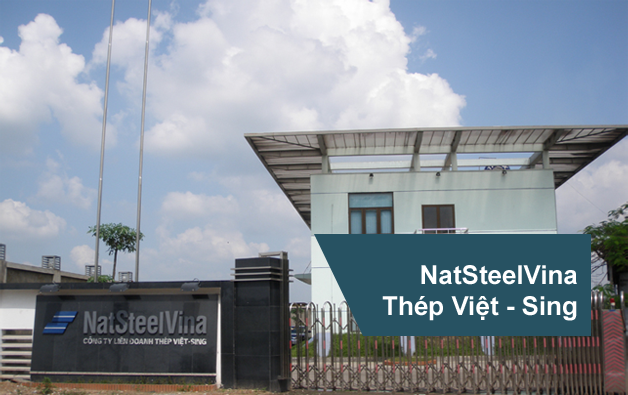

Công ty TNHH NatSteelVina là Công ty Liên doanh giữa tập đoàn NatSteel (nay là Tập đoàn NatSteel holdings), một trong những Tập đoàn Công nghiệp hàng đầu Singapore và Tổng công ty thép Việt Nam (VSC) được thành lập trên cơ sở Giấy phép đầu tư số 711/CP ngày 02/11/1993. Nhà máy được lắp đặt tại thành phố Thái Nguyên, tỉnh Thái Nguyên.
NatSteelVina kế thừa và phát huy thế mạnh của cả hai đối tác Liên doanh trong việc nghiên cứu ứng dụng và phát triển. Với độ ngũ quản lý giàu kinh nghiệm, cán bộ công nhân viên nhiệt tình, tận tụy, trình độ chuyên môn cao và hệ thống dây chuyền sản xuất hiện đại nhập khẩu từ Italya. Ngoài ra Công ty còn áp dụng đồng bộ hóa hệ thống quản lý thông tin, nguyên liệu đầu vào, dịch vụ bán và chăm sóc khách hàng.
Với mục tiêu cung cấp sản phẩm với chất lượng tốt nhất, không ngừng cải tiến và nâng cao chất lượng sản phẩm. Bên cạnh đó NatSteelVina được khách hàng đánh giá là công ty thép có chất lượng dịch vụ tốt nhất Việt Nam.
NatSteel là một trong những tập đoàn sản xuất thép hàng đầu khu vực châu Á – Thái Bình Dương. Tập đoàn NatSteel có tất cả các chủng loại thép lên đến 2 triệu tấn, với các nhà máy hoạt động trên khắp Australia, Trung Quốc, Malaysia, Philippines, Singapore, Thái Lan và Việt Nam.
NatSteel cung cấp các sản phẩm thép cao cấp và các giải pháp cho ngành công nghiệp xây dựng bao gồm các sản phẩm thượng tầng cũng như các sản phẩm và dịch vụ hạ tầng. Sản phẩm của NatSteel được sử dụng trong các dự án khu dân cư, công nghiệp và thương mại, cũng như các công trình cơ sở hạ tầng.
Singapore là trụ sở cũng như nhà máy hạm của NatSteel. NatSteel là nhà máy thép duy nhất ở Singapore có các nhà máy sản xuất thượng tầng và hạ tầng tích hợp, nơi mà thép được sản xuất bằng các phế liệu tái chế, và chế tạo dựa trên nhu cầu của khách hàng. Trên thực tế, NatSteel là một trong những doanh nghiệp có nhà máy cắt và uốn cong độc lập lớn nhất trên thế giới.
Là một phần của tập đoàn thép Tata – một trong những tập đoàn thép hàng đầu thế giới – NatSteel sẵn sàng cho sự phát triển xa hơn nữa, và mong muốn trở thành tiêu chuẩn cho ngành công nghiệp thép toàn cầu tạo ra giá trị và tư cách doanh nghiệp.